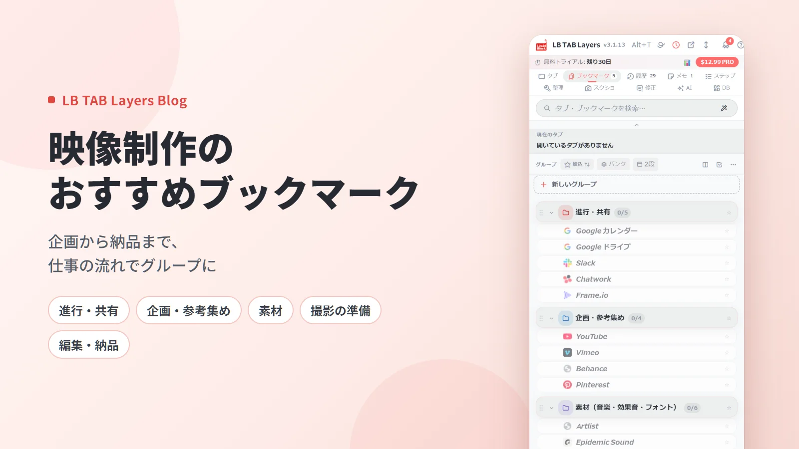
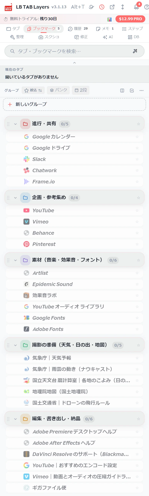

映像制作・動画編集でブックマークしておくと便利なのは、毎日の進行に使うサービス、参考と素材のサイト、撮影の準備に使う公的なページ、編集ソフトと配信先の公式ヘルプです。この記事では 26 件を、仕事の流れに沿った 5 つのグループ（進行・共有／企画・参考集め／素材／撮影の準備／編集・書き出し・納品）に分けて紹介します。リストはブックマークのファイル（HTML）で配っていて、LB TAB Layers の［設定］→［データ］→［ブックマークを取り込む］から入れると、そのまま 5 つのグループとして並びます。Chrome のふつうのブックマークとしても読み込めます。
映像の仕事は、企画・撮影・編集・納品と工程が多く、工程ごとに開くサイトが変わります。予定と連絡、参考の動画、音楽やフォント、撮影の日の天気と日の出の時刻、編集ソフトのヘルプ、配信先の推奨設定。そのたびに検索して探していると、それだけで手が止まります。
この記事では、映像制作が本業の私たち（神戸の映像制作の会社）が、ブックマークしておくと便利な Web サービスと公式のページを 26 件選び、仕事の流れに沿った 5 つのグループに分けて紹介します。リストはブックマークのファイルでも配っているので、ダウンロードして取り込めば、そのまま使い始められます。
各サービスの説明は、2026 年 11 月 23 日に、それぞれの公式のページで確かめた内容です。値段やプランの比べ方、どれがよいかの評価は書いていません。
映像制作・動画編集で、ブックマークしておくと便利なサイト 26 件
先に全体を表にします。グループは、仕事の流れの順に並べています。
| グループ | 入っているもの | 件数 |
|---|---|---|
| 1. 進行・共有 | Google カレンダー、Google ドライブ、Slack、Chatwork、Frame.io | 5 |
| 2. 企画・参考集め | YouTube、Vimeo、Behance、Pinterest | 4 |
| 3. 素材（音楽・効果音・フォント） | Artlist、Epidemic Sound、効果音ラボ、YouTube オーディオ ライブラリ、Google Fonts、Adobe Fonts | 6 |
| 4. 撮影の準備（天気・日の出・地図） | 気象庁の天気予報と雨雲の動き、国立天文台 暦計算室、地理院地図、国土交通省のドローンの飛行ルール | 5 |
| 5. 編集・書き出し・納品 | Adobe Premiere と After Effects のヘルプ、DaVinci Resolve のサポート、YouTube と Vimeo の推奨設定、ギガファイル便 | 6 |
このリストのブックマークのファイル（HTML）をダウンロード（5 グループ・26 件）
ファイルの使い方は、記事の後半の「LB TAB Layers に取り込んで、グループとして使う」と「Chrome のふつうのブックマークとして読み込むとき」にまとめています。グループを 5 つにしているのは、LB TAB Layers の無料版で作れるグループの数（5 つまで）に収めるためです。
1. 進行・共有 — 予定・連絡・ファイル・動画の確認
映像の仕事は、クライアントと制作の側をあわせて関わる人が多く、予定合わせと連絡、ファイルの受け渡しが毎日のように続きます。そのためのサービスをまとめたグループです。
| サービス | できること（公式のページより） |
|---|---|
| Google カレンダー | カレンダーを共有して、相手の都合のよい時間を確かめられる。Google Meet の会議を予定に入れたり、予約ページで予約を受け付けたりもできる |
| Google ドライブ | ファイルを保存・共有し、ドキュメントや PDF を共同で編集できるクラウドのストレージ |
| Slack | チームの会話を通じて情報を共有し、仕事を進めるためのビジネス向けのツール |
| Chatwork | ビジネス専用のチャット。ファイルの共有、タスクと納期の管理、ビデオ・音声通話もひとつでできる |
| Frame.io | 制作物をクラウドに上げて、動画・画像・ドキュメントに細かいフィードバックを付けられる（Adobe のサービス） |
連絡の道具（Slack と Chatwork）は、候補を並べています。チームやクライアントと使っているほうを残し、使っていないほうはグループから外してください。ふだん開くのは、各サービスのトップページより、自分のワークスペースや共有フォルダのページです。取り込んだあとで、自分のアドレスに置き換えると便利です。
2. 企画・参考集め — 参考の動画と作品を探す
映像は、言葉だけでは同じ絵を思い浮かべにくいものです。私たちは、発注する側と作る側が参考の動画を出し合う打ち合わせをしてから、制作を進めます。映像をイメージできないまま進めると、発注の質が下がるからです。このグループは、その参考を探す入口です。
| サービス | できること（公式のページより） |
|---|---|
| YouTube | 動画を探して見られる、動画の共有サービス |
| Vimeo | 高画質の動画をホスティング・管理・共有できる、広告なしの動画プラットフォーム。動画へのフィードバックの機能もある |
| Behance | クリエイターが作品を公開し、ほかの人の作品を見つけ、仕事を頼める場所 |
| 見つけた「ピン」（画像やアイデア）を、自分のボードに保存してまとめられる |
参考になりそうな動画を見つけたら、その動画のページを残しておくと、打ち合わせのときにすぐ出せます。「あの動画」を言葉で説明するより、見せたほうが早く伝わります。
3. 素材 — 音楽・効果音・フォント
素材のサイトは、使える条件（仕事の動画に使えるか、クレジットの表記がいるか、どこまで使えるか など）が、サイトごとに違います。条件は変わることもあるので、使う前に、各サイトの利用規約やライセンスのページで確かめてください。この記事では、条件の中身は書いていません。
| サービス | できること（公式のページより） |
|---|---|
| Artlist | 音楽・効果音・映像素材・テンプレートなどの素材と、映像や画像を作る AI の道具をそろえたサービス |
| Epidemic Sound | 動画のための音楽と効果音のライブラリ |
| 効果音ラボ | 効果音の素材をダウンロードできるサイト。サイトの中に利用規約のページがある |
| YouTube オーディオ ライブラリ | YouTube Studio の中にある、音楽と効果音の一覧。ジャンルやムードなどで探して、MP3 でダウンロードできる。ライセンスの種類は曲ごとに表示される |
| Google Fonts | オープンソースのフォントとアイコンのライブラリ |
| Adobe Fonts | 分類や対応言語で絞り込んで、フォントを探せる。手持ちの画像から、近いフォントを探すこともできる |
音楽のサービス（Artlist と Epidemic Sound）は、候補を並べています。チームで使っているほうを残してください。YouTube オーディオ ライブラリは、YouTube Studio にログインして、左のメニューの［オーディオ ライブラリ］から開くページです。
4. 撮影の準備 — 天気・日の出・地図・ドローンのルール
ロケの日取りや、当日の段取りを決めるときに開くページです。気象庁・国立天文台・国土地理院・国土交通省の公式のページを集めました。
| ページ | わかること（公式のページより） |
|---|---|
| 気象庁｜天気予報 | 気象庁の天気予報。撮影の日取りを決めるときに |
| 気象庁｜雨雲の動き（ナウキャスト） | 雨雲の動き・雷の活動度・竜巻の発生確度。雨は 1 時間先までの予測を見られる（気象庁「高解像度降水ナウキャスト」の解説より） |
| 国立天文台 暦計算室｜各地のこよみ | 都道府県ごとに、日の出・日の入り、月の出・月の入り、南中時、月齢がわかる |
| 地理院地図（国土地理院） | 地形図、写真、標高、地形分類、災害情報などを見られるウェブ地図。3D 表示や断面図、新旧の写真の比べ見もできる |
| 国土交通省｜無人航空機（ドローン・ラジコン機等）の飛行ルール | ドローンを飛ばすときのルールと、機体の登録や飛行の許可・承認などの手続きの案内 |
日の出・日の入りの時刻は、朝や夕方の光で撮りたい場面の段取りを組むときに使えます。ドローンで撮るときのルールと手続きは、国土交通省のページで、その時点の最新のものを確かめてください。この記事では、ルールの中身は書いていません。
5. 編集・書き出し・納品 — 公式ヘルプと推奨設定、ファイルの受け渡し
編集ソフトの使い方で迷ったときと、書き出しの設定を決めるときに開く、公式のヘルプとガイドです。最後に、大きなファイルを送るサービスを入れています。
| ページ | わかること（公式のページより） |
|---|---|
| Adobe Premiere デスクトップヘルプ | Adobe の動画編集ソフト Premiere の公式ヘルプ。新機能、技術要件、編集の基本、カラー、書き出し、トラブルの解決など |
| Adobe After Effects ヘルプ | After Effects の公式ヘルプ。コンポジション、レイヤー、テキストのアニメーション、エフェクト、エクスプレッションなど |
| DaVinci Resolve のサポート（Blackmagic Design） | ソフトウェアのアップデート、マニュアル、サポートノート |
| YouTube｜アップロードする動画におすすめのエンコード設定 | コンテナ、オーディオ コーデック、動画コーデック、フレームレート、ビットレート、動画の解像度とアスペクト比、色空間のおすすめ |
| Vimeo｜動画とオーディオの圧縮ガイドライン | Vimeo に上げる前に圧縮するときの推奨設定（コーデック、フレームレート、ビットレート、解像度、色、音声） |
| ギガファイル便 | 大容量のファイルを送れる、ファイル転送のサービス |
Premiere のヘルプは、以前の Premiere Pro のユーザーガイドのアドレス（helpx.adobe.com/jp/premiere-pro/user-guide.html）を開いても、このページに移ります（2026 年 11 月 23 日に確かめました）。DaVinci Resolve の使い方を学ぶ公式の教材（トレーニングの動画と本）は、Blackmagic Design の「DaVinci Resolve – トレーニング」のページにあります。
推奨の設定は、数字を書き写しておくより、公式のページをブックマークしておくほうが確かです。ページが新しくなっても、開けば今の内容を見られます。Instagram や TikTok など、ほかの配信先に出すときは、それぞれの公式ヘルプの推奨設定のページを、このグループに足してください。ファイルの受け渡しは、クライアントと決めている方法があれば、そちらに合わせます。
このリストを LB TAB Layers に取り込んで、グループとして使う
私たちが自分たちの仕事のために作った Chrome 拡張「LB TAB Layers」は、ブックマークのファイル（HTML）を、そのままグループとして取り込めます。取り込むと、この記事の 5 つのグループが、サイドパネルに 5 つのグループとして並びます。
- このリストのブックマークのファイル（HTML）をダウンロードする
- LB TAB Layers を開き（Alt+T。Mac は Option+T）、右の列のいちばん下の歯車から［設定］を開いて、［データ］→［ブックマークを取り込む］を押す
- 新しいタブで開いた画面の「ファイルから取り込む」で［ファイルを選ぶ］を押し、ダウンロードしたファイルを選ぶ
- 「5 グループ・26 件が見つかりました」と出たら、［TAB Layers に取り込む］を押す
- 「5 グループを取り込みました。サイドパネルのグループに並びます」と出たら完了。サイドパネルに、5 つのグループが並ぶ

取り込みの画面の説明は「ほかのブラウザや拡張で書き出したファイル（HTML・CSV・TXT）から、グループを作ります。今のブックマークは動きません。」です。そのとおり、今の Chrome のブックマークは動きません。取り込んだグループは、Chrome のブックマークの「LB TAB Layers」フォルダに入ります。やめたいときは、同じ画面の［取り消す］から元に戻せます。
工程ごとに ▶ で開いて、■ で閉じる
グループにマウスを乗せると出る ▶ で、中のページがまとめて開きます。開いたタブは、グループと同じ名前・同じ色の Chrome のタブグループにまとまります。すでに開いているページは、二重には開きません。工程が終わったら ■ で、そのタブグループごと閉じます。閉じても、保存はそのまま残ります。
たとえば、撮影の前の日は「撮影の準備」を ▶ で開き、確かめ終わったら ■。編集に入ったら「編集・書き出し・納品」を ▶。工程が変わるたびに、開いておくタブのまとまりを入れ替えられます。
案件ごとのグループも、同じように作れます。案件のページを開いた状態で、パネルの下の「現在のタブを追加」を押し、保存先のグループを選びます。最初の操作は「LB TAB Layers クイックチュートリアル」にまとめています。無料版でもグループは 5 つまで作れて、▶ と ■ も使えます。インストールから 30 日間は、すべての機能を使えます。
プレビューの動画に、そのまま修正指示を書く
このリストの YouTube・Vimeo・Google ドライブで見る動画には、LB TAB Layers の「修正指示」で、そのまま指示を書けます。直したい場面で止めて、動画の下に書いて、Enter で保存すると再生が続きます。場面の絵と再生位置が自動で一緒に残り、たまった指示は再生位置の順に並んだ「指示シート」として、テキスト・PDF・PowerPoint などで送れます。修正指示は PRO の機能ですが、お試し期間中はすべて使えます。書き方のコツは「動画の修正指示（チェックバック）の書き方」にまとめています。
Chrome のふつうのブックマークとして読み込むとき
LB TAB Layers を使わないときや、ブックマーク バーからも開きたいときは、同じファイルを Chrome にそのまま読み込めます。Chrome にもとからある機能です。
- 上のリンクから、ブックマークのファイルをダウンロードしておく
- Chrome の右上の ︙（その他）→［ブックマークとリスト］→［ブックマークと設定をインポート］を選ぶ
- 「ブックマークと設定のインポート」の画面が開く。いちばん上の選ぶ欄で「HTML ファイルをブックマークに登録」を選び、「お気に入り/ブックマーク」にチェックが入っていることを確かめる
- ［ファイルを選択］を押し、ダウンロードしたファイルを選んで［開く］→［完了］

読み込んだブックマークの場所は、Google Chrome ヘルプによると、Chrome にそれまでブックマークがなかった場合はブックマーク バー、すでにブックマークがある場合は、ブックマーク バーの最後にある［その他のブックマーク］フォルダです。見つからないときは、ブックマーク マネージャ（Ctrl + Shift + O、Mac は ⌘ + Option + B）で探せます。見つからないときは、︙ →［ブックマークとリスト］→［ブックマーク マネージャ］で探せます。書き出しと読み込みのくわしい手順は「クロームのブックマークをエクスポート・インポートする方法」にまとめています。
LB TAB Layers をこれから入れる人は、入れた直後に出る「どんなときに使いたいですか？」のいちばん上の「今のブックマークから始める（おすすめ）」で、Chrome のブックマークをコピーして並べられます。元のブックマークは、動かさずにそのまま残ります。コピーしたものは「今のブックマーク（日付 コピー）」という置き場にまとまり、読み込んだフォルダは、その中のサブグループとして並びます。5 つのグループの分け方のまま使いたいときは、上の「ファイルから取り込む」の道が向いています。
自分用に直すコツ
使わないものを外し、自分のアドレスに置き換える
候補を並べたもの（連絡の道具、音楽のサービス）は、チームで使っているほうだけ残します。Slack や Chatwork、Google ドライブは、トップページより、チームのワークスペースや共有フォルダのアドレスにしておくと、開いてすぐに仕事に入れます。
案件のグループを足す — パソコンのフォルダと同じ並びで
このリストは、案件をまたいで使う「共通」のブックマークです。案件ごとのページ（クライアントの共有ページ、プレビューを見るページ、納品先など）は、案件の名前で別のグループにします。
私たちは、パソコンの中のフォルダを案件ごとに作っています。案件名のフォルダの中に、ツール名のフォルダと、レンダリング・プレビュー・納品・ダウンロードのフォルダを並べ、それぞれに日付（20261115 の形）のフォルダを入れて、経過がわかるようにしています。「ダウンロード」は、クライアントから届いたファイルを、受け取った日付のフォルダに分けてためておく場所です。
ブックマークも、同じ言葉で並べると迷いません。案件のグループに入れるページの名前の頭に「プレビュー」「納品」のように工程の名前を付けておくと、パソコンのフォルダとブックマークを、同じ順で探せます。
配信先と、よく使うヘルプのページを足す
よく出す配信先が決まっているなら、その公式ヘルプの推奨設定のページを「編集・書き出し・納品」に足します。編集ソフトのヘルプも、トップページだけでなく、何度も開く項目（書き出しの手順など）のページを足しておくと、検索する回数が減ります。
まとめ
- 映像制作でブックマークしておくと便利なものを、進行・共有／企画・参考集め／素材／撮影の準備／編集・書き出し・納品の 5 つのグループ、26 件にまとめた
- 素材のサイトの使える条件は、サイトごとに違う。使う前に、各サイトの利用規約やライセンスのページで確かめる
- 撮影の準備は、気象庁・国立天文台・国土地理院・国土交通省の公式のページで
- 書き出しの推奨設定は、数字を書き写さず、公式のページをブックマークしておく
- リストのファイルは、LB TAB Layers の［設定］→［データ］→［ブックマークを取り込む］で、そのまま 5 つのグループに。Chrome のふつうのブックマークとしても読み込める
よくある質問
Q. 映像制作・動画編集で、ブックマークしておくと便利なサイトは？
仕事の流れで分けておくと探しやすくなります。この記事では、進行・共有（Google カレンダー、Google ドライブ、Slack、Chatwork、Frame.io）、企画・参考集め（YouTube、Vimeo、Behance、Pinterest）、素材（Artlist、Epidemic Sound、効果音ラボ、YouTube オーディオ ライブラリ、Google Fonts、Adobe Fonts）、撮影の準備（気象庁、国立天文台 暦計算室、地理院地図、国土交通省）、編集・書き出し・納品（Adobe と Blackmagic Design の公式ヘルプ、YouTube と Vimeo の推奨設定、ギガファイル便）の 26 件を紹介しています。
Q. 素材サイトの音楽や効果音は、仕事の動画に使えますか？
使える条件は、サイトごとに違い、変わることもあります。使う前に、各サイトの利用規約やライセンスのページで確かめてください。YouTube オーディオ ライブラリは、曲ごとにライセンスの種類が表示されます。
Q. ダウンロードしたブックマークのファイルを、Chrome に読み込むには？
Chrome の右上の ︙ →［ブックマークとリスト］→［ブックマークと設定をインポート］を選び、「ブックマークと設定のインポート」の画面で「HTML ファイルをブックマークに登録」を選んで、［ファイルを選択］からファイルを選びます。Google Chrome ヘルプによると、すでにブックマークがある場合は、ブックマーク バーの最後にある［その他のブックマーク］フォルダに追加されます。
Q. LB TAB Layers に取り込むと、今のブックマークは変わりますか？
変わりません。ファイルから取り込んでも、今の Chrome のブックマークは動きません。取り込んだグループは Chrome のブックマークの「LB TAB Layers」フォルダに入り、取り込みの画面の［取り消す］から元に戻せます。
Q. 無料版でも、5 つのグループを取り込めますか？
無料版でもグループは 5 つまで作れます。このリストは 5 つのグループなので、まだグループを作っていなければ、そのまま収まります。インストールから 30 日間は、すべての機能を使えます。
Q. Instagram や TikTok の推奨設定は入っていますか？
このリストには入れていません。出す先が決まっているときは、各サービスの公式ヘルプの推奨設定のページを、「編集・書き出し・納品」のグループに足してください。
▶ 実際の操作を動画で見る
サイドバーで、ブックマークとタブをいっしょに管理する様子です。
映像の仕事のサイトを、工程ごとに ▶ で開く。
リストを取り込むと、5 つのグループに。▶ でまとめて開き、■ でまとめて閉じる。アカウント登録なし · 保存先は Chrome のブックマーク
Chrome に無料で追加 →